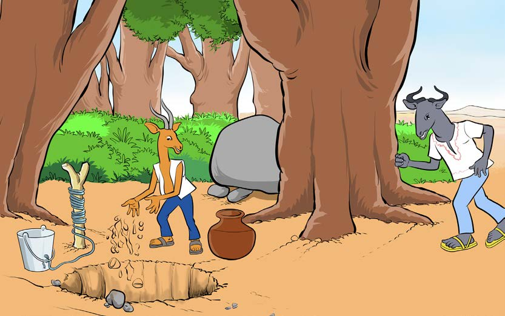

Andika upya hadithi ya Nyumbu na Swala kwa kuweka alama za uandishi mahali zinapokosekana; tumia eneo la kuandikia, kibodi au Breli.
siku moja, Nyumbu alienda kisimani, akakuta maji yana takataka. Aliamua kutoa takataka na kuchota maji Siku iliyofuata, akakuta tena maji yana takataka. Nyumbu alishangaa sana, akaamua kufanya uchunguzi Siku moja, alikwenda kisimani mapema na kujificha Mara, Swala alifika. alichota maji, kisha akaanza kuweka takataka kisimani. Nyumbu alipomwona, akashangaa na kusema, ala Kumbe ni Swala? Akatoka mafichoni na kumuuliza, kwa nini unachafua maji Swala aliona aibu, akaomba msamaha Aliahidi kutorudia tena kuchafua maji Nyumbu alimsamehe Swala. tangu siku hiyo, maji ya kisima yalibaki safi kila wakati. Shughuli ya nne Andika hadithi fupi unayoipenda. Tumia alama za uandishi kwa usahihi.

Andika hadithi fupi unayoipenda kwa kutumia alama za uandishi kwa usahihi; tumia eneo la kuandikia, kibodi au Breli.